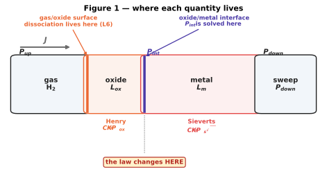
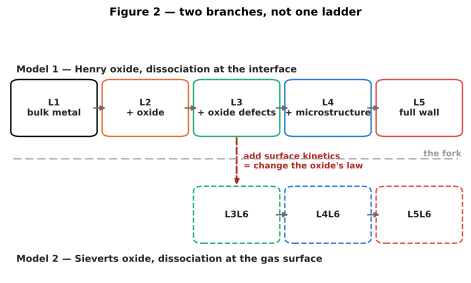
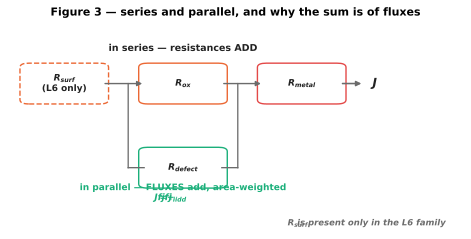

Part I — Overview¶
What the model answers, how it is put together, and what it cannot be asked.
1.1 The questions this model answers¶
The model is built to answer four questions about an oxide-coated alloy wall at a steady operating point. They are listed in the order the answers get harder.
How much hydrogen crosses this wall? A flux, in mol m⁻² s⁻¹, from a material, a temperature and a pressure difference.
Which physical process is limiting that flux? The resistance split across the surface, the oxide and the metal, reduced to a regime label. This is the question the model exists for: a flux on its own is hard to act on, while knowing that the metal carries 97% of the resistance tells you that improving the coating is wasted effort at this operating point.
How much is the coating actually buying? The permeation reduction factor, the flux through the coated wall against the bare one.
Which parameters does the answer depend on, and how strongly? A sensitivity analysis, stratified by regime — because the parameters that matter in a metal-limited wall are not the ones that matter in an oxide-limited one.
Important
Question 4 cannot be answered globally. The ranking of parameters is a property of the regime, not of the model, which is why the sensitivity workflow partitions before it ranks. See Part IV — The sensitivity workflow.
What it is not asked¶
The model is steady-state and closed-form. It carries no time axis, so it cannot answer how long a wall takes to reach that steady state, how much hydrogen it holds on the way, or what happens when the operating point changes. Steady State, Transients, and the Accumulation Model sets out why that is sufficient here and the two conditions under which it would stop being.
1.2 Ways of running it¶
Route |
Use it for |
Entry point |
|---|---|---|
Notebook |
Exploring one study, producing figures |
|
Python API |
A single answer, or embedding in other code |
|
Sensitivity workflow |
Which parameters matter, per regime |
|
Container |
A reproducible run with pinned dependencies |
|
All four resolve material data through the same switch, so exactly one study is active at a time and none of them can silently read another’s numbers.
1.3 The wall, and the pipeline through it¶


Figure 1. The wall in cross-section. Read left to right: hydrogen arrives as H₂, dissociates (or does not) at a surface, crosses the oxide, crosses the metal, and leaves. Each symbol is drawn at the place it applies. Look at the marked boundary: the sorption law changes at the oxide/metal interface, which is the single most consequential fact about this model.¶
The levels are cumulative — each adds one physical effect to the one before — but they do not form a single ladder.


Figure 2. Two branches, not one ladder. Look at the dashed branch: adding surface kinetics does not simply add a resistance, it changes which sorption law the oxide obeys. A result does not carry across that fork.¶
1.3.1 Level by level¶
Level |
Adds |
Main inputs |
Main outputs |
Code |
|---|---|---|---|---|
1 |
Bulk metal: Fick with Sieverts boundaries |
\(D_m, K_s, L_m, P_{up}, P_{down}\) |
|
|
2a |
A perfect oxide, molecular (Henry) transport |
\(D_{ox}, K_{ox}, L_{ox}\) |
|
|
2b |
Oxide and metal in series |
both layers |
|
|
3 |
Defects short-circuiting the oxide |
\(f_d\), defect type |
|
|
4 |
Metal microstructure: traps and grain boundaries |
\(N_T, E_b, d\) |
|
|
5 |
The full wall — defective oxide over defective metal |
all of the above |
|
all of the above |
6 |
Finite-rate dissociation, Langmuir coverage |
\(k_{diss}, K_{eq}\) |
|
Level 6 composes with the others rather than sitting on top of them, which is why
combinations are written L1L6, L2aL6, L5L6. L5L6 is the most complete
configuration.
1.3.2 What is in series and what is in parallel¶


Figure 3. Look at how the parallel branch combines. Surface, oxide and metal are in series, so their resistances add. Defect paths are in parallel with the intact oxide — but because flux is extensive, those paths combine as an area-weighted sum of fluxes, not as the reciprocal sum used for parallel electrical resistors.¶
1.4 Assumptions and limits¶
Each of these is a modelling decision, not an oversight. Each is also a place where a result will mislead if the assumption does not hold.
Assumption |
Holds when |
Breaks when |
|---|---|---|
Steady state |
The operating point has been constant for longer than the wall’s diffusion time |
Cycling, start-up, or a thick wall at low temperature |
One-dimensional transport |
The wall is thin against its lateral extent |
Edges, welds, a defect comparable to the thickness |
Local equilibrium at each interface |
Transport is slower than interfacial reaction |
Level 6 exists precisely because this fails at the gas surface |
Dilute hydrogen |
Lattice occupancy stays low |
Trap occupancy θ > 0.9, where Oriani’s model is warned against |
Sorption laws fixed per layer |
H₂ stays molecular in the oxide (Model 1), or atomic (Model 2) |
The fork itself — the two cannot be mixed within one calculation |
Properties constant across the layer |
Composition and microstructure are uniform |
A graded oxide, a decarburised layer |
Defects are parallel and non-interacting |
Defect spacing is large against their size |
High defect fractions, percolation |
Material data apply at the operating temperature |
\(T\) is inside the measured window |
Extrapolation — which the canonical wrappers do silently |
Important
Two limits bite more often than the rest. Extrapolation beyond the measured temperature window happens silently, and the sensitivity analysis extrapolates much further than a single run does. And the fork between Model 1 and Model 2 is not a refinement: the same wall can be metal-limited under Level 5 and oxide-limited under Level 5L6. Both are written up in Warnings and caveats.
1.5 Software and environment¶
Language |
Python ≥ 3.9 |
Environment |
|
Core dependencies |
numpy, scipy, pandas, matplotlib, SALib |
Install |
|
Exact pins |
|
Documentation |
Sphinx with MyST, built under |
Dependency bounds in pyproject.toml are deliberately ranges rather than pins, so the
editable install resolves to a no-op in an environment that already has the core
libraries. The container is where exactness lives.
Important
Pin SALib==1.5.0. From 1.5.1 SALib requires np.trapezoid, which needs NumPy 2,
while torch in the same environment pins NumPy below 2.
How this documentation is kept honest¶
Documentation about a model that has moved on is worse than none, so the claims here are machine-checked rather than trusted:
Tool |
Fails when |
|---|---|
|
An equation in Part II disagrees with the code — 44 checks |
|
A figure cannot be regenerated — 20 figures |
|
A page names a function, module or parameter that does not exist |
|
A quoted real number has drifted from what the model now returns |
|
A docstring section is malformed or a cross-reference is broken |
Where to go next¶
The physics from the ground up — Foundations: chemical potential and the driving force, which starts at chemical potential and builds to the driving force the code uses.
The fork most results depend on — Two models, not six levels. Read this before comparing any two levels.
Running something — Getting started.
Which parameters matter — Part IV — The sensitivity workflow.
When it breaks — Practical.